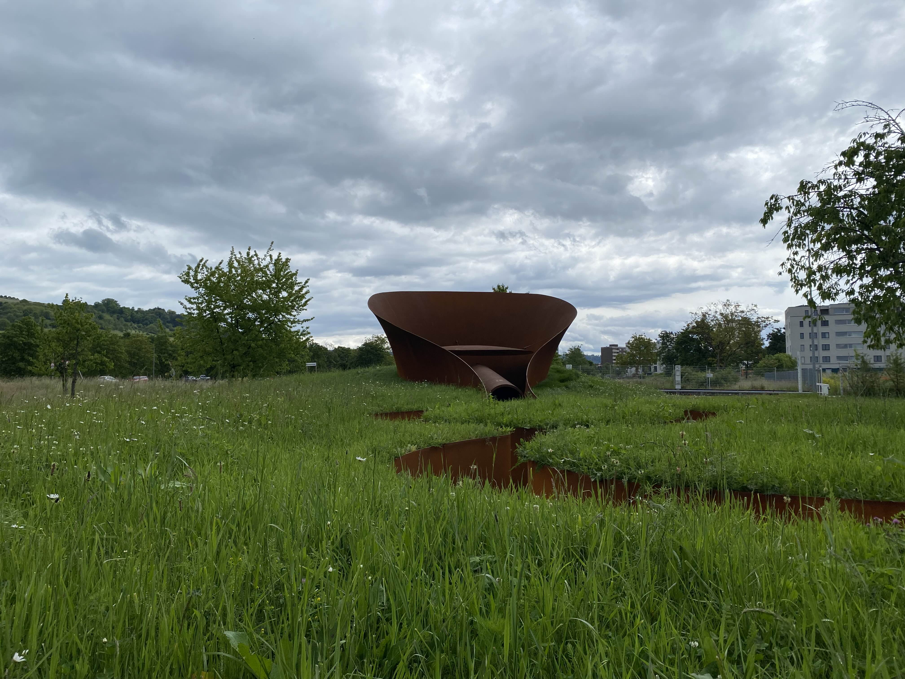
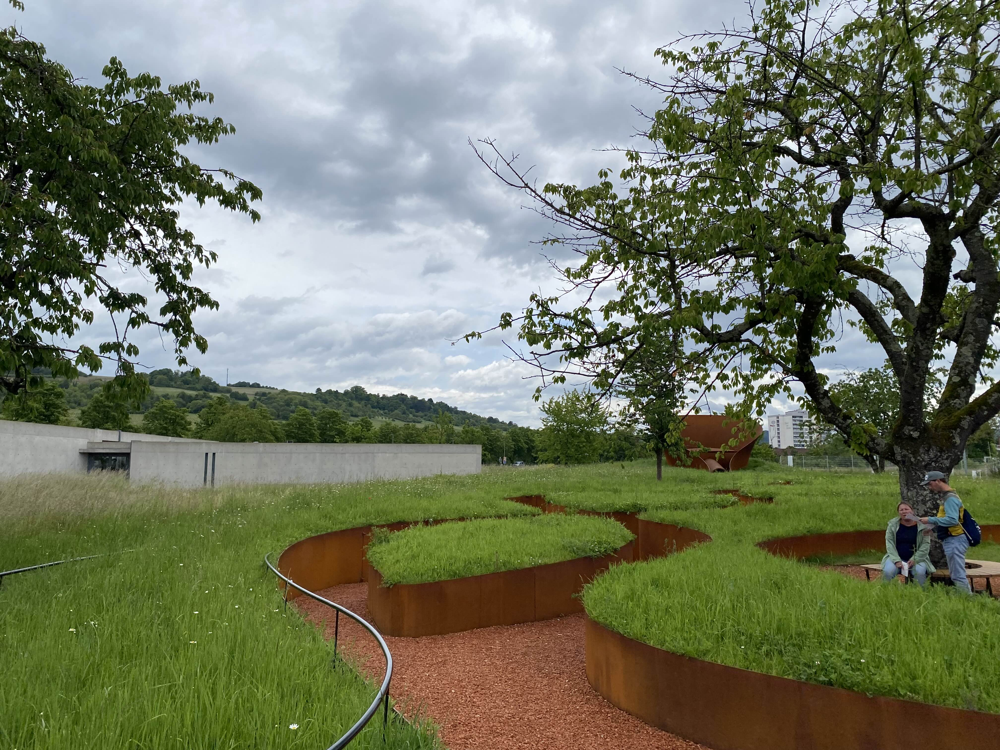
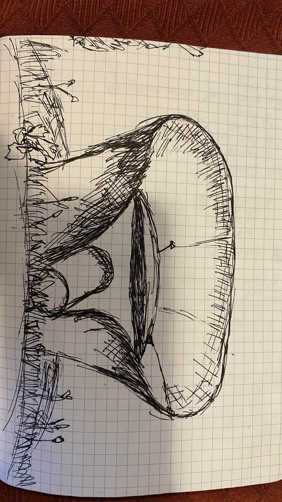

Title
at vitra, we chose to analise the funnel shaped exebition.
the funnel was made of solid metal that was shaped into a cup like shape
with an enterence which consisted of a large pipe.and a bent metal circle that hangs above it held by metal wires.
i would discrive the shape as simple and apolinsk, where the shape is relativly symmetrical and pridictable.
it is placed as the centerpeice in the middle of a maze like structure with the same rusted metal walls but now with green grass growing on the top of it.
the maze is intermitedly interupted by small stair cases that lead up to a more open circle space. here you can see over the maze and get a clear veiw of the centerpeice.
the colors stand in contrast where the dull brown of rusted metal is met by the vibrant green of the grass above.
when walking through the maze there is a sense of restlessness that comes to me, this is however replaced by calm when i climb the stairs into the open area of green.


